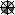
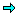

button again
to restart the calculation.
button again
to restart the calculation.| Prev - Next - Down | SDMetrics - the UML design measurement tool |
button on the tool bar. SDMetrics will read your UML
design file and calculate the metrics as specified. This is a fully
automated process that usually takes a few seconds. You can monitor
the calculation progress on the status bar.
If an error occurs during data processing (e.g., a file was not
found, metric calculation failed due to a semantic error in a
custom metric definition file), the calculation will
abort and you are prompted with a description and location of the
error. After you fixed the error (e.g., specified the correct project
file, corrected the metric definition file), press the
button again
to restart the calculation.
Upon successful completion, you can explore the metric data in the main window. SDMetrics provides several views:
| View name | Description |
|---|---|
| Metric Data Tables | Presents metric data as a set of tables |
| Histograms | Displays histograms for the metrics |
| Kiviat Diagrams | Displays Kiviat diagrams for the model elements |
| Rule Checker | Shows design rule violations for the UML model |
| Design Comparison | Compares metric values to those of a second UML model |
| Relation Matrices | Shows relations such as "class uses class", "actor associated with use case" |
| Descriptive Statistics | Concise summary of the descriptive statistics for the metric data |
| Graph Structures | Shows circular dependencies and connected components in model element relation graphs |
| Model | Displays the UML model in a tabular format |
| Catalog | Shows the definitions of all metrics, design rules, and relation matrices |
| Log | Keeps a log of previous calculation runs |
To open a view, use the "Views" menu from the menu bar. The following views are also accessible via toolbar buttons: Metric Data Tables (), Histograms (), Kiviat Diagrams (), and the Rule Checker view ().
Many views allow for navigation to other views. For example, views displaying metric data provide links to the "Catalog" view to display the definition of the metrics, and links to the "Histogram" view to view the distribution of the metrics. After following such links, the history buttons  on the toolbar navigate back and forth between the previously visited views.| Prev | Up | Next |
| Section 4.2.4 "Loading Project Settings" | Contents | Section 4.3.1 "Common controls in views" |